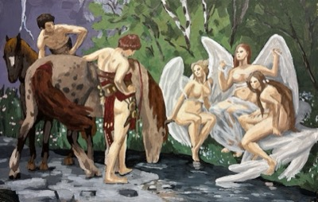
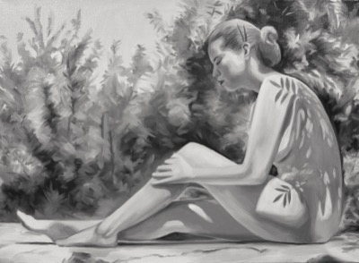

{kind=link}

after h. prell, 1922
jan 2026
acrylic on polyurethane, 36"x22"

after h. prell, 1922
nov 2025
oil on canvas, 36"x22"

after tōshi y., 1994
sep 2025
oil on canvas, 24"x18"

after giambologna, 1583
may 2025
oil on canvas, 30"x40"

after p.-n. guérin, 1811
august 2023
oil on canvas, 36"x36"

after j.-d. court, 1825
june 2023
oil on canvas, 24"x18"

may 2023
oil on canvas, 18"x24"

after michelangelo, 1514
january 2023
oil on canvas, 10"x30"

june 2022
gouache on paper, 5.9"x7.1"

the toilette of venus,
1751
april 2022
oil on canvas, 24"x36"
{kind=link}

after z. glass, 1950s
mar 2026
oil on canvas, 24"x18"

after verrocchio, 1483
june 2025
oil on canvas, 36"x48"

after lottatori, disc. 1583
may 2025
oil on canvas, 24"x36"

after w. homer, 1887
oct 2025
oil on canvas, 24"x18"

after a. cabanel, 1875
july 2023
oil on canvas, 30"x10"

june 2023
oil on gesso panel, 5"x5"

february 2023
watercolor on paper, 5.9"x5.9"

after utagawa k., 1844
october 2022
oil on canvas, 48"x24"

october 2022
watercolor on paper, 6.7"x4.6"

june 2022
watercolor on paper, 7.5"x9"

may 2022
oil on canvas, 24"x18"

march 2022
oil on canvas, 15"x30"